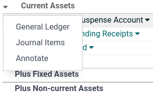
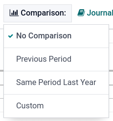
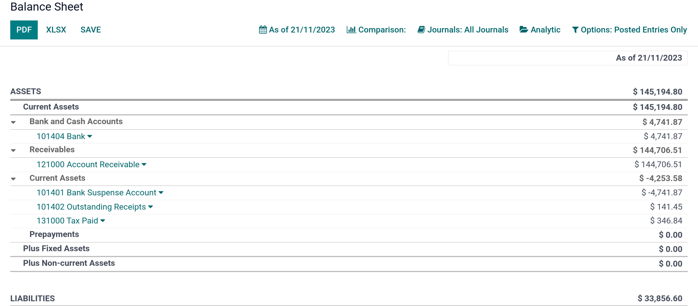
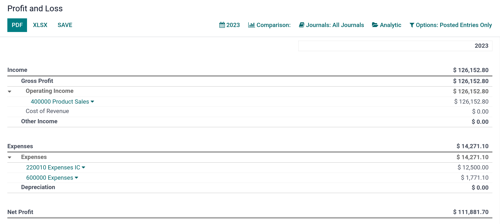
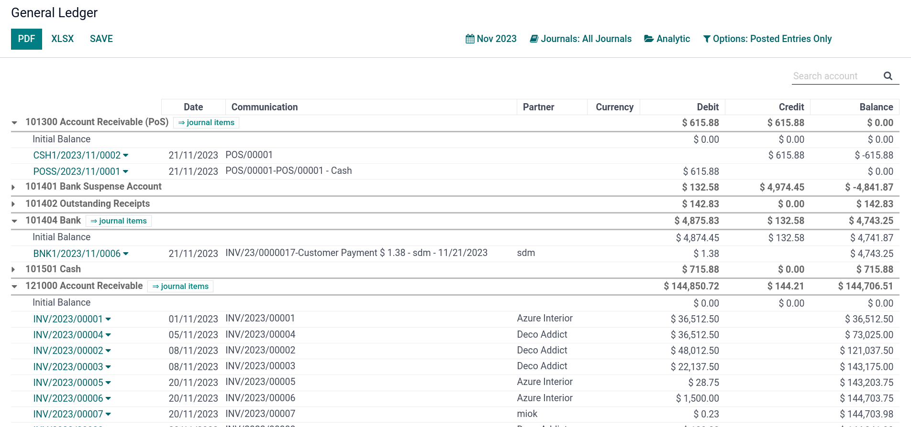
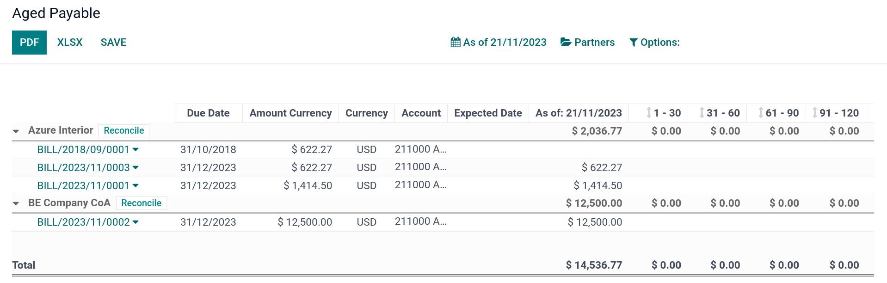

Reporting¶
Main reports available¶
Odoo includes generic and dynamic reports available for all countries, regardless of the localization package installed:
Balance Sheet
Profit and Loss
Executive Summary
General Ledger
Aged Payable
Aged Receivable
Cash Flow Statement
Tax Report
Reports can be annotated, printed, and drilled down to see details (payments, invoices, journal items, etc.) by clicking the down arrow. Reports can also be exported to PDF or XLSX format by clicking PDF or XLSX at the top of the page.
You can compare values across periods by using the Comparison menu and selecting the periods you want to compare.
Balance Sheet¶
The Balance Sheet shows a snapshot of your organization’s assets, liabilities, and equity at a particular date.
Profit and Loss¶
The Profit and Loss report (or Income Statement) shows your company’s net income by deducting expenses from revenue for the reporting period.
Executive Summary¶
The Executive Summary allows a quick look at all the important figures to run your company.
In basic terms, this is what each item in the following section reports:
- Performance:
- Gross profit margin:
The contribution of all sales made by your business minus any direct costs needed to make those sales (labor, materials, etc.).
- Net profit margin:
The contribution of all sales made by your business minus any direct costs needed to make those sales and fixed overheads your company has (electricity, rent, taxes to be paid as a result of those sales, etc.).
- Return on investment (per annum):
The ratio of net profit made to the amount of assets the company used to make those profits.
- Position:
- Average debtors days:
The average number of days it takes your customers to (fully) pay you across all your customer invoices.
- Average creditors days:
The average number of days it takes you to (fully) pay your suppliers across all your bills.
- Short-term cash forecast:
How much cash is expected in or out of your business in the next month, i.e., the balance of your Sales account for the month minus the balance of your Purchases account for the month.
- Current assets to liabilities:
Also referred to as current ratio, this is the ratio of current assets (assets that could be turned into cash within a year) to the current liabilities (liabilities that will be due in the next year). It is typically used to measure a company’s ability to service its debt.
General Ledger¶
The General Ledger Report shows all transactions from all accounts for a chosen date range. The initial summary report shows each account’s totals; from here, you can view a detailed transaction report or any exceptions. This report helps check every transaction that occurred during a specific period.
Aged Payable¶
Run the Aged Payable Details report to display information on individual bills, credit notes, and overpayments you owe and how long these have gone unpaid.
Aged Receivable¶
The Aged Receivables report shows the sales invoices awaiting payment during a selected month and several months prior.

Cash Flow Statement¶
The Cash Flow Statement shows how changes in balance sheet accounts and income affect cash and cash equivalents and breaks the analysis down to operating, investing, and financing activities.

Tax Report¶
This report allows you to see the net and tax amounts for all the taxes grouped by type (sale/purchase).